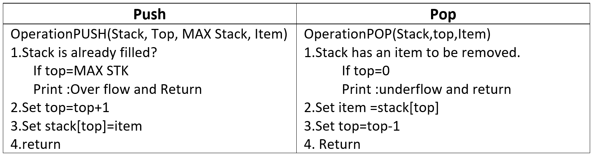
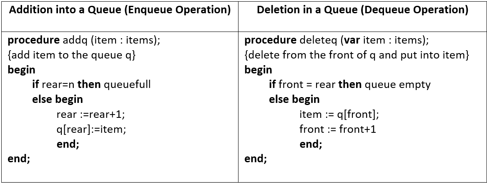

Lesson 7: Stacks and Queues
STACKS
Stack is a specialized data storage structure (Abstract data type).
Access of elements in a stack is restricted.
It has two main functions: push and pop.
Insertion in a stack is done using push function and removal from a stack is done using pop function.
Stack allows access to only the last element inserted hence, an item can be inserted or removed from the stack from one end called the top of the stack. It is therefore, also called Last-In-First-Out (LIFO) list.
Fields:
Capacity - stands for the maximum number of elements stack can hold
Size - stands for the current size of the stack
Elements - is the array of elements.
FUNCTIONS
createStack function – This function takes the maximum number of elements (maxElements) the stack can hold as an argument, creates a stack according to it and returns a pointer to the stack. It initializes Stack S using malloc function and its properties.
push function - This function takes the pointer to the top of the stack S and the item (element) to be inserted as arguments. Check for the emptiness of stack
pop function - This function takes the pointer to the top of the stack S as an argument.
top function - This function takes the pointer to the top of the stack S as an argument and returns the topmost element of the stack S.
PROPERTIES OF STACKS
Each function runs in O(1) time.
It has two basic implementations
Array-based implementation – It is simple and efficient but the maximum size of the stack is fixed.
Singly Linked List-based implementation – It’s complicated but there is no limit on the stack size, it is subjected to the available memory.

Summary
A stack is an ordered list in which all insertions and deletions are made at one end, called the top.
Given a stack S=(a[1],a[2],.......a[n]) then we say that a1 is the bottommost element and element a[i] is on top of element a[i-1], 1 < i < = n.
The restrictions on a stack imply that if the elements A,B,C,D,E are added to the stack, in that order, then the first element to be removed/deleted must be E. Equivalently we say that the last element to be inserted into the stack will be the first to be removed. For this reason stacks are sometimes referred to as Last In First Out (LIFO) lists.
QUEUES
Queues are dynamic collections which have some concept of order. This can be either based on order of entry into the queue - giving us First-In-FirstOut (FIFO) which can be built with linked lists:
The time needed to add or delete an item is constant and independent of the number of items in the queue. Thus we class both addition and deletion as an O(1) operation.
Algorithm:

End of the Lesson